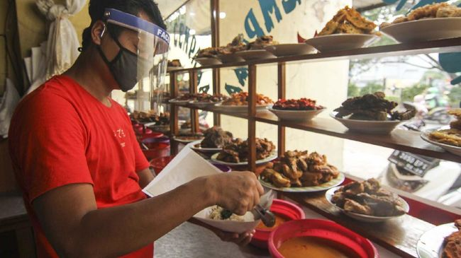

Tentang Kami
Warung Mba Nadya baru ada sejak tugas ini diberikan. Warung ini menjual berbagai makanan yang enak banget dan harganya juga murah. Kalian pasti akan ketagihan walaupun kita tidak menggunakan zat adiktif apapun. Doakan Warung Mba Nadya akan buka cabang di segala penjuru Surabaya. Terima kasih dan ditunggu kedatangannya di Warung Mba Nadya. Selamat makan dan selamat selamat.